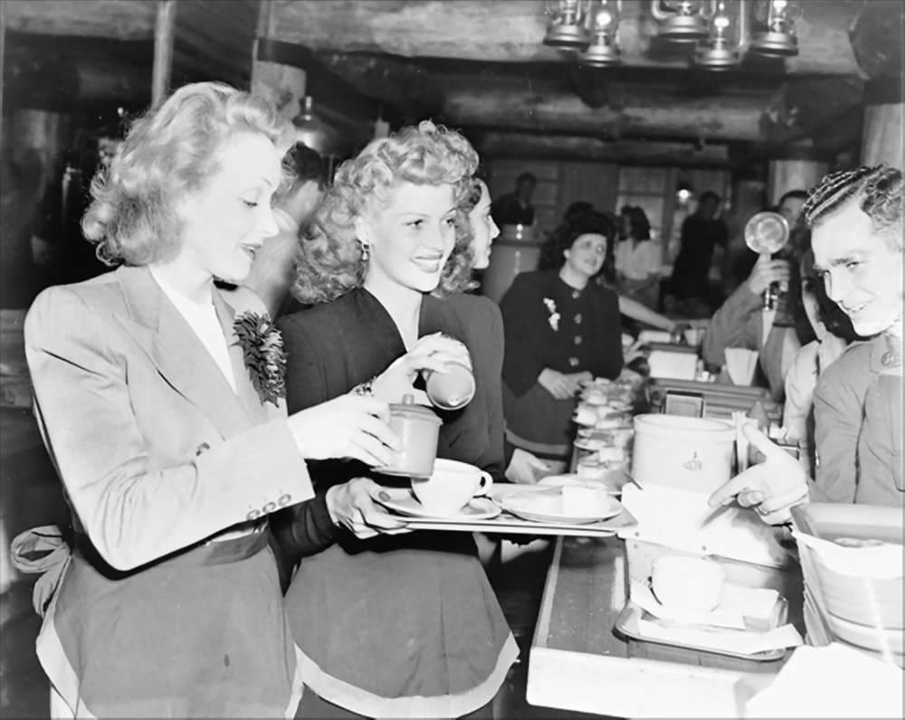

Gals
Quotes, tales and more about brazen GALS – the brave, brilliant, sometimes goofy, and always beautifully original stars, authors, artists, leaders. . .
Featured:

The Spectacularly Beautiful, Talented, Brave and Brazen
JOSEPHINE BAKER
“All my life, I have maintained that the people of the world can learn to live together in peace if they are not brought up in prejudice.” -- Josephine Baker, my Great Great Aunt , was born on June 3, 1906.
OkokokOK, I made the part up about her being my aunt – her real name wasn’t even Baker – but I’ve adored her since the minute I first read about this brave, funny, talented, glamorous, generous woman. . .
Read on:
Brazen Hussy HISTORY
Brazen Hussy HISTORY: Fearless Nazi Fighter Marlene Dietrich
She was gorgeous, sexy, talented, adored – but Marlene Dietrich was also out and out fearless. And she proved it in WWII.
She got out of Germany as Nazis were growing in power and proudly became a US citizen in 1939. And when the US entered WWII, Marlene Dietrich showed her incredibly fearless bravery. She didn't only entertain the troops from a distance, she got down and dirty, cajoling her way to the front lines on occasion to not just entertain but to give hope and care to soldiers. What a woman!
Brazen Hussy HISTORY: The Hollywood Canteen for US Soldiers

On October 3, 1942, the Hollywood Canteen opened at 1451 Cahuenga Boulevard in LA. And this was no was new coffee shop or restaurant, darlings. It was a concerted effort by many of the classic stars of Hollywood to help US soldiers.
The project was created and driven by Bette Davis and John Garfield, along with Jules Stein (president of Music Corporation of America), to help US servicemen – usually just before they shipped out to fight in WWII, and many would never return home.
The goal? Food, dancing, entertainment, laughs, - offered up by some of the biggest stars in Hollywood. You might see Betty Grable washing dishes or Marlene Dietrich flipping burgers. Humphrey Bogart might serve you dinner. And the young soldiers danced the night away with beautiful stars they’d only seen before as figures on the silver screen.
It wasn’t a publicity stunt for the movie folks, either. And it involved far more than big-name stars to pull off the Hollywood Canteen.
Over three thousand actors (from famous to bit players), grips, dancers, directors, wardrobe designers, hair stylist, writers, agents, stand-ins, secretaries, set designers and painters, sound engineers, camera operators and every other category of folks working in the movie world of that time volunteered to help out at the canteen.
Based on the already established Stage Door Canteen in New York, where Broadway stars and others working in theater entertained troops, the Hollywood canteen was a huge and sometimes zany success
From a 1942 article in Hollywood Chapters magazine, written by Ben Hartford, who described a night at the Canteen where he talked with Miss Davis and helped her entertain the troops: "To be sure, we formed a line for the conga half an hour ago and I got tripped up by Ronald Colman and Bonita Granville. But no one notices.”
“Bette laughs just like you are supposed to, with plenty of energy…. If you're standing in front of a few thousand soldiers, the least you can do is make them laugh."

I’m INNOCENT, I Tell You!
by Sher
Darlings, have you ever wondered what it would be like to a criminal?...
See more
Free Milk from a Cow? What about Free Pork from a Sow?
by Mel
We’ve all heard the old adage that asks why should men marry us when they can get the milk for free...
See more
Well Said, Darlings!
Paintings by Sher
Quotes from Hollywood legends, who also happened to be classic Brazen Hussies. . .
See more
Bettie Page Forever!
By Sher
Take a look at Bettie Page. Of course, darlings, you can not HELP but adore her...
See more
Hussy Aptitude Test
Are you a bit brazen? Do you possess a hint of hussiness? Want to go ALL the way...
See more
AMELIA BLOOMER, HISTORICAL HUSSY
by Mel
Just as Thomas Crapper did not actually invent the flush toilet...
See more
Hepburn Like You Never Saw Her Before - as a MOTH!
By Sher
Yep, it’s Katherine Hepburn in a metallic moth suit designed by Walter Plunkett for her second film...
See more
Put this NEW HOLIDAY on You Calendar, Darlings!
Did you need another holiday you never heard of before to celebrate? We didn’t either. But...
See more
HOW TO GIVE GREAT... WORD!
by Sher
We like words. In fact, we adore words. That’s why we have not only perfected the art of the withering stare...
See more